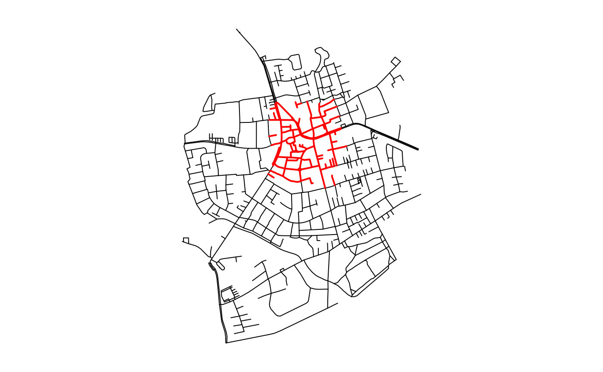

These functions allow to interpret spatial relations between edges and
other geospatial features directly inside filter
and mutate calls. All functions return a logical
vector of the same length as the number of edges in the network. Element i
in that vector is TRUE whenever any(predicate(x[i], y[j])) is
TRUE. Hence, in the case of using edge_intersects, element i
in the returned vector is TRUE when edge i intersects with any of
the features given in y.
edge_intersects(y, ...)
edge_is_disjoint(y, ...)
edge_touches(y, ...)
edge_crosses(y, ...)
edge_is_within(y, ...)
edge_contains(y, ...)
edge_contains_properly(y, ...)
edge_overlaps(y, ...)
edge_equals(y, ...)
edge_covers(y, ...)
edge_is_covered_by(y, ...)
edge_is_within_distance(y, ...)The geospatial features to test the edges against, either as an
object of class sf or sfc.
Arguments passed on to the corresponding spatial predicate
function of sf. See geos_binary_pred.
A logical vector of the same length as the number of edges in the network.
See geos_binary_pred for details on each spatial
predicate. Just as with all query functions in tidygraph, these functions
are meant to be called inside tidygraph verbs such as
mutate or filter, where
the network that is currently being worked on is known and thus not needed
as an argument to the function. If you want to use an algorithm outside of
the tidygraph framework you can use with_graph to
set the context temporarily while the algorithm is being evaluated.
Note that edge_is_within_distance is a wrapper around the
st_is_within_distance predicate from sf. Hence, it is based on
'as-the-crow-flies' distance, and not on distances over the network.
library(sf, quietly = TRUE)
library(tidygraph, quietly = TRUE)
# Create a network.
net = as_sfnetwork(roxel) %>%
st_transform(3035)
# Create a geometry to test against.
p1 = st_point(c(4151358, 3208045))
p2 = st_point(c(4151340, 3207520))
p3 = st_point(c(4151756, 3207506))
p4 = st_point(c(4151774, 3208031))
poly = st_multipoint(c(p1, p2, p3, p4)) %>%
st_cast('POLYGON') %>%
st_sfc(crs = 3035)
# Use predicate query function in a filter call.
intersects = net %>%
activate(edges) %>%
filter(edge_intersects(poly))
oldpar = par(no.readonly = TRUE)
par(mar = c(1,1,1,1))
plot(st_geometry(net, "edges"))
plot(st_geometry(intersects, "edges"), col = "red", lwd = 2, add = TRUE)

par(oldpar)
# Use predicate query function in a mutate call.
net %>%
activate(edges) %>%
mutate(disjoint = edge_is_disjoint(poly)) %>%
select(disjoint)
#> # A sfnetwork with 701 nodes and 851 edges
#> #
#> # CRS: EPSG:3035
#> #
#> # A directed multigraph with 14 components with spatially explicit edges
#> #
#> # A tibble: 851 × 4
#> from to disjoint geometry
#> <int> <int> <lgl> <LINESTRING [m]>
#> 1 1 2 FALSE (4151491 3207923, 4151474 3207946)
#> 2 3 4 FALSE (4151398 3207777, 4151390 3207727, 4151370 3207673)
#> 3 5 6 FALSE (4151408 3207539, 4151417 3207573, 4151421 3207592)
#> 4 7 8 TRUE (4151885 3206698, 4151861 3206711, 4151845 3206725, 4151…
#> 5 9 10 TRUE (4151732 3207017, 4151721 3206809)
#> 6 11 12 TRUE (4152152 3206984, 4152143 3206932, 4152147 3206923)
#> # … with 845 more rows
#> #
#> # A tibble: 701 × 1
#> geometry
#> <POINT [m]>
#> 1 (4151491 3207923)
#> 2 (4151474 3207946)
#> 3 (4151398 3207777)
#> # … with 698 more rows